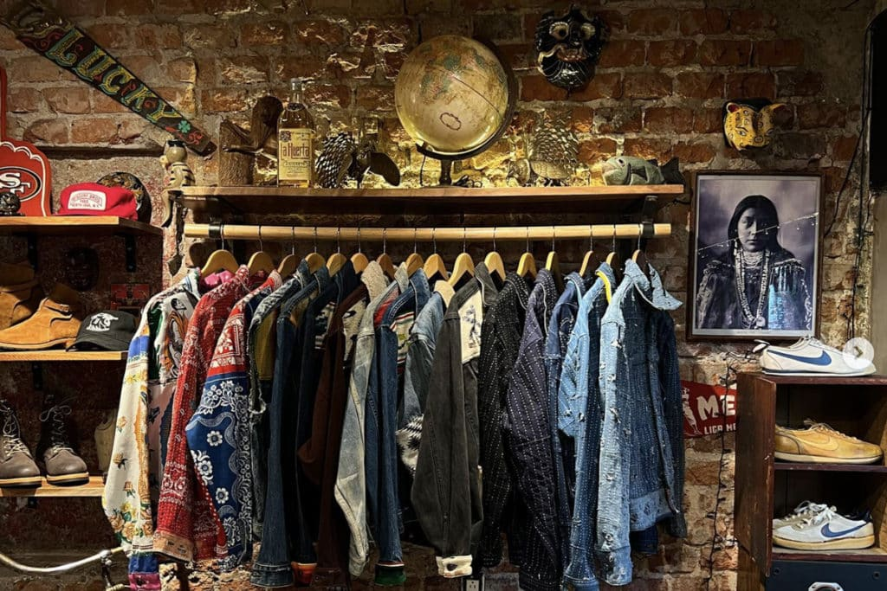

"RetroThreads es tu destino de estilo vintage, destacándose en el mundo de la moda en línea como un faro de autenticidad y atemporalidad. Nuestra historia comienza con la visión de un equipo apasionado comprometido con la moda y la sostenibilidad. Lanzamos nuestra plataforma con la misión de redefinir la moda de segunda mano, buscando tesoros únicos en armarios de todo el mundo, desde prendas nostálgicas de los años 80 hasta los clásicos de los 90. Nuestra interfaz evoca la esencia del pasado con una experiencia de usuario moderna. Enfocados en la sostenibilidad, creemos que la moda de segunda mano es estilosa y poderosa para reducir el impacto ambiental. Hemos construido una comunidad apasionada de amantes de la moda vintage, donde cada prenda cuenta una historia única. RetroThreads no es solo una tienda en línea, es un destino para quienes buscan conectar con el pasado a través de la moda. Únete a nosotros en este viaje donde cada clic revela un nuevo capítulo en la historia de la moda de segunda mano. ¡Descubre tu estilo único con RetroThreads hoy!"
